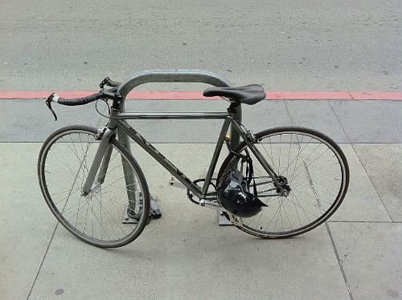

Друзья
Monica: Ross, how long have you been planning this wedding? Ross: I don't know. A month? Emily has probably been planning it since she was five!
Гениальный сериал :)
Monica: Ross, how long have you been planning this wedding? Ross: I don't know. A month? Emily has probably been planning it since she was five!
Гениальный сериал :)

Неожиданно :)
Шикарно чуваки танцуют!

Договорился я, в итоге, только с RayKo Photo Center. У остальных или не было больше даркрума, или даркрум этот был для членов клуба, или же я просто не получил ответ. От RayKo ответ мне пришел уже в СФ, когда я не особо и надеялся. Пленок я взял всего несколько, да и те - первые, что попались под руку. Выглядит даркрум так:

И так:

Заплатил я что-то порядка $30 за 2 часа чистого времени в темной комнате (успел напечатать 4 фотки, еще штуки 4 были пробные или просто не получились). Промывка фоток и их сушка выполняется снаружи даркрума и на стоимость не влияет.
Это был очень клевый опыт (до этого я на больших увеличителях не печатал, да и в даркруме был только в своей ванной :). Если поеду еще, то непременно схожу к ним опять!

Офигенный альбом, в особенности вторая его часть!
Это какойто анрил, но у айпада реально вечная батарейка!

Я очень похожим образом ее себе представлял, хотя в моем соображении она была чуточку худее)) via
Пользоваться инетом с Айфона в штатах все-таки можно. Для этого надо пойти не к AT&T, у которых таки нет препейда с дата коннекшинами, а через улицу - к t-mobile. Те продадут план на месяц (голосовой и смсочный локальный анлим за $50 + $10 за анлим смски в Россию, плюс 100 мегов 3G, а потом анлим edge), обрежут симку и дадут фирменный micro sim extractor, сделанный из канцелярской скрепки.
Лучше от этого станет, но не сильно: вместо 3g у нас edge (3g с какими-то условиями, под которые мы не попадаем), да и сама связь совсем не напоминает привычный Мегафон дома - она то есть, то ее нет. Короче, полное ощущение, что ты в русской деревне, где для того, чтобы позвонить, надо сначала походить кругами вокруг да около, а потом еще и разговаривать, стоя на носочках)
Пишите, если че: +1 (415) 691 08 81.

Тут все перемещаются на совершенно офигенных велах. Я думал, где Convoy берет такие клевые велы - оказывается в Сан-Франциско!
У них тут какая-то своя модификация шоссейников — тонюсенькие колеса (ах!!!) и часто всего одна передача, как у городских.
Чувак на скучной сессии про то, как правильно дизайнить юзер интерфейсы, показал клевый айпадный апп — Architizer. Сижу вот, разглядываю архитектурные шедевры.